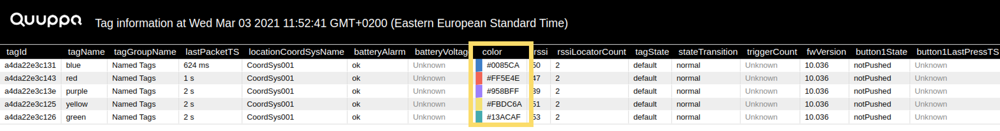
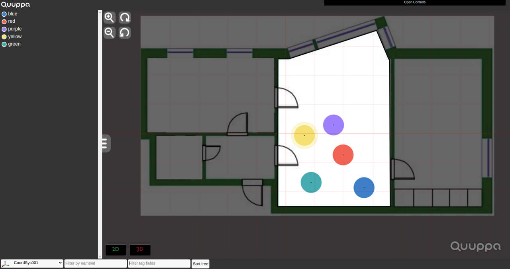

Tag Tree Definitions
You can find explanations below for the data fields that are available for the tags listed in the Positioning Engine Web Console's map view.
batteryAlarm
- ok - battery level is good
- low - battery level is getting low, tag should be replaced soon
- null - this information has not yet been received by the system
This information can be used to troubleshoot tag performance and evaluate whether any tags need to be replaced in the near future.
The Web Console retrieves this information from the QPE using the Get Tag Data API method.
BatteryAlarmTS
Shows a timestamp for when the latest battery level status was received from the tag. This can be used to troubleshoot tag performance.
The Web Console retrieves this information from the QPE using the Get Tag Data API method.
button1LastPressTS
Shows a timestamp for when the tag's button was last pressed.
This indicator is used to troubleshoot tag performance, e.g. to check if the tag reacts when it's button is pressed. If there is no reaction, then it's important to investigate whether the physical button is broken, the tag has run out of battery or something else is preventing the system from registering the action.
The Web Console retrieves this information from the QPE using the Get Tag Data API method.
button1State
- notPushed - The tag's button has not been pushed.
- pushed - The tag's button has been pushed.
- null - This information has not yet been received by the system.
This indicator is used to troubleshoot tag performance, e.g. to check if the tag reacts as expected when the button has been pushed.
The Web Console retrieves this information from the QPE using the Get Tag Data API method.
button1StateTS
Shows a timestamp for when the latest tag button state information was received by the system. The information can be used to troubleshoot tag performance.
The Web Console retrieves this information from the QPE using the Get Tag Data API method.
color
Shows the colour set for the tag in the project file. By default, the colour for all tags in the project is set to red (#FF0000), but can be edited using the Quuppa Site Planner.
Using different colours for the tags is used to visually identify specific tags, for example in the tag details table or in the map view.


The Web Console retrieves this information from the QPE using the Get Tag Data API method.
lastPacketTS
Shows the timestamp of the tag's last packet that was received by the system. This information can be used to troubleshoot tag and network performance issues. For example, if no packets have been received for some time but there is reason to expect that the tag should be in a state that transmits radio packets, it's important to investigate whether it's a problem with the specific tag (e.g. has it run out of battery or been damaged) that need to be fixed.
The Web Console retrieves this information from the QPE using the Get Tag Data API method.
location
Shows the QPE's latest best estimate for the tags location in X, Y, Z coordinates in meters. The system uses multiple data points to produce this estimate. If the QPE cannot produce a location estimate that it is confident in (e.g. it has too few data points), no coordinates will be provided. This information can be used for evaluating where the tag in question is in the deployment environment.
The Web Console retrieves this information from the QPE using the Get Tag Data API method.
locationCoordSysId
Shows the ID for the coordinate system that the tag is currently in. The coordinate system can be used to identify where the tag is but also to troubleshoot any system performance issues related to coordinate systems.
The Web Console retrieves this information from the QPE using the Get Tag Data API method.
locationCoordSysName
Shows the name of the coordinate system that the tag is currently in. The coordinate system names are defined in the project file and can be edited using the Quuppa Site Planner.
The coordinate system name can be used to troubleshoot system performance issues.
The Web Console retrieves this information from the QPE using the Get Tag Data API method.
locationMovementStatus
Shows a status indicating the current movement type for the tag. The options are:
- moving - When the system sees the tag on the move and the tag's state is triggered.
- stationary - When the system has determined that the tag is not currently moving, i.e. has entered the default state.
- hidden - When a tag is in a zone that has been set hide location information. For more information on creating such zones for your project, please refer the Quuppa Site Planner User Manual.
- noData - When a tag exists in the system but the movement status cannot be determined, i.e. no location data is available yet.
These states can be used to troubleshoot tag and system performance issues.
The Web Console retrieves this information from the QPE using the Get Tag Data API method.
locationRadius
Shows an estimated accuracy in meters for the given location for the tag in question. In 2D, this field describes the radius of a circle centered at the given (X,Y)-coordinates. In 3D positioning, accuracy refers to the radius of a sphere. The size of the radius determines the confidence in the estimate, with a larger radius indicating more uncertainty in the result. This information can be used to assess the level of accuracy achieved by the system for the positioning estimate and to troubleshoot system performance issue.
The Web Console retrieves this information from the QPE using the Get Tag Data API method.
locationTS
Shows the latest timestamp for the tag's location information. This can be used to troubleshoot and system performance.
The Web Console retrieves this information from the QPE using the Get Tag Data API method.
locationType
Shows the level of confidence in the current location estimate, i.e. the Quuppa system's best guess for the tag's current location. The QPE uses a combination of data points to calculate where it believes the tracked tag is at any given moment. The more data points that are available for the calculation, the more accurate the location estimate is and the higher the confidence in that positioning result is. The possible values for locationType are:
- position - When the system has a firm and accurate location estimate for the tag. Multiple data points (e.g. RSSI, spectrum, tag movement and recent tag history) were available for the calculation and the system is confident that the tag is at the coordinates provide in the location property.
- approximate - When an approximate location estimate for the tag has been achieved using multiple, but not all of the possible data points (e.g. RSSI and spectrum but not tag movement and recent history data). The locationRadius property will show the level of accuracy that the QPE gives for the location value.
- proximity - When the QPE cannot reliably determine a location estimate for the tag, it can still provide a value for a specific Locator that it estimates to be near the tag (based on RSSI values). The coordinates given in such cases in the location property are the coordinates for the nearest Locator.
- presence - When the system can place the tag in a coordinate system, but cannot determine it's location or the location of a nearby Locator. In such cases, the location property is set to null.
- hidden - When a tag is in a zone that has been set to hide location information. Coordinates for the location property will be set to null. For more information about creating such zones for your project, please refer the Quuppa Site Planner User Manual.
- noLocation - When the tag has been heard by the system but the system has been unable to determine a location for the tag (e.g. due to weak signals or too many conflicting data points). In such cases, the location property is set to null.
- noData - When the tag has been added to the system but has not been picked up by the Locators. In such cases, the location property is set to null.
This information can be used to assess system accuracy and troubleshoot performance issues.
The Web Console retrieves this information from the QPE using the Get Tag Data API method.
locationZoneIds
Shows an array of zone IDs in which the tag is currently. Empty if the tag's position is not in any zone, null if this info is not available (i.e. the tag's position cannot be computed). Tag may be in multiple overlapping zones simultaneously. This can be used to identify where the tag is presently and to troubleshoot system performance.
The Web Console retrieves this information from the QPE using the Get Tag Data API method.
locationZoneNames
Shows an array of human-readable zone names in which the tag is currently. Empty if tag's position is not in any zone, null if this info is not available (i.e. the tag's position cannot be computed). Tag may be in multiple overlapping zones simultaneously. This can be used to identify where the tag is presently and to troubleshoot system performance.
Zone names are defined in the project file and can be edited using the Quuppa Site Planner.
The Web Console retrieves this information from the QPE using the Get Tag Data API method.
rssi
Shows the averaged received signal strength indicator (RSSI) value for packets sent by the tag. The values can range from 0-63 dB, with 63 being the strongest signal value indicating that the tag has been within roughly 30 cm of the Locator from which the rssi was received. A value above 40 indicates that the tag has been within 5 m. Null is shown if this information has not yet been received by the system.
This indicator is used to troubleshoot network performance issues.
The Web Console retrieves this information from the QPE using the Get Tag Data API method.
rssiLocatorCount
Shows the number of Locators that have received packets from this tag recently. The information can be used to troubleshoot network performance issues.
The Web Console retrieves this information from the QPE using the Get Tag Data API method.
tagGroupName
Displays the tag group name that has been defined in the project file for the tag group that the tag belongs to, e.g. Named Tags. Tag group names can be edited using the Quuppa Site Planner.
Tag group names are used to identify tag groups in the project.
The Web Console retrieves this information from the QPE using the Get Tag Data API method.
tagId
Shows the unique ID number for the tag and is used to identify specific tags in the project.
The Web Console retrieves this information from the QPE using the Get Tag Data API method.
tagName
Displays the tag name that has been defined in the project file. Tag names can be edited using the Quuppa Site Planner. If you have not defined a tag name for the tag, this will show unknown.
Tag names are used to identify specific tags in the project.
The Web Console retrieves this information from the QPE using the Get Tag Data API method.